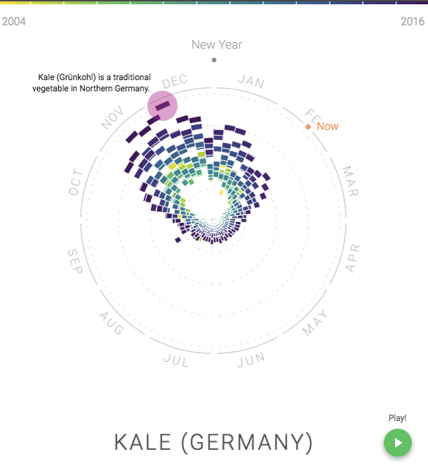
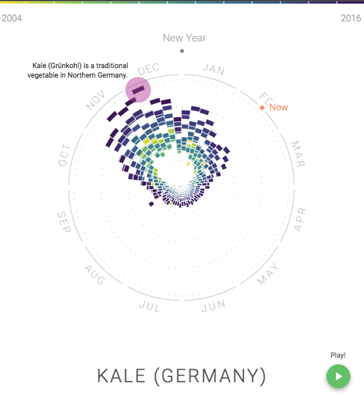

Critical Overview
"Fun Stuff" - Nathan Yau, FlowingData
Is this a good visualization project?
First of all, the project doesn’t speak of any important causes or issues. It is made:
- For fun
- To showcase how unconventional visualization can reveal interesting patterns about some cultural phenomena
 

Is the visualization approach novel to any degree?
Well, it seems so.
It compresses yearly time-series data into a single circular plot: there seems to be no similar time-series chart layout previously published, that captures several years of data in one same radial plane, using color to differentiate between years.
Does the main chart layout work well?
- Gives a better macro reading of information, seeing more seasonality patterns at once becomes possible.
Example: Germany, Kale — we can see seasonality pattern that is not evident from time series charts.
- On the other hand, the dynamics of aggregate interest becomes less evident: Example: japan. Interest in kale was going down until 2012 and after it started to revive. We hardly can see this from the main circular picture. Solution: using interactivity to explore different years separately.
Other good design solutions?
"There are also a lot of thoughtful design touches that you might notice. A few off the top: annotation for the more trendy foods, notes for holidays or specific events that relate to the topic you view, and segments sized for area as you move from the center of the circle to the edges to compensate for visual attention."
Nathan Yau, FlowingData